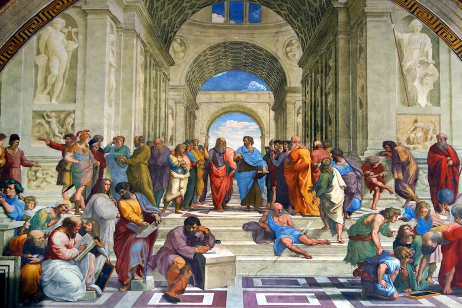
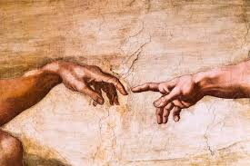

I decided to make my website about the renaissance which occured during the 15th and 16th centuries and symbolised the beginning of a new era of art and would rebirth greek and roman periods. It started in italy and would reach england until the 16th century but would come to an end during the 17th century. The Medici Family would be some of the few poeple to start this movement along with Francesco Petrarca. Some great artist, authors and scientist would become well known during this era. The reniassance has been credited with cloing the gap between the middle ages and mordern civilization.
Art was one of the few things that are linked closely to the renaissance. Artist would fuse different forms of study with each other like artist fusing science to recreate a the human body and also using math to create more accurate buildings. The art during this time was more realistic being characterized by its realism and naturalism. DUring this time they would find out that the sun is in the cernter of the solar system and not earth. There would also be a shift in thinking with a new view of astronomy and math. They would use different techniques like perspectives and shadows and lighting which would add more deph to there work. The artist would also fuse their art with emotion and was an extra quality to their work.
 The ranaissance would also be a time for exploration around the globe. During this time europeans would set out at sea to find out more about the world. There would be several different major explorations during the renaissance by poeple like Fernidad Magellan, Marco Pol, and Ponce De Leon along witbh other famous names. Explores would find new shipping routes that led to America and far East taking the risk of going places that weren't fully mapped which couldv'e lead to them getting lost.